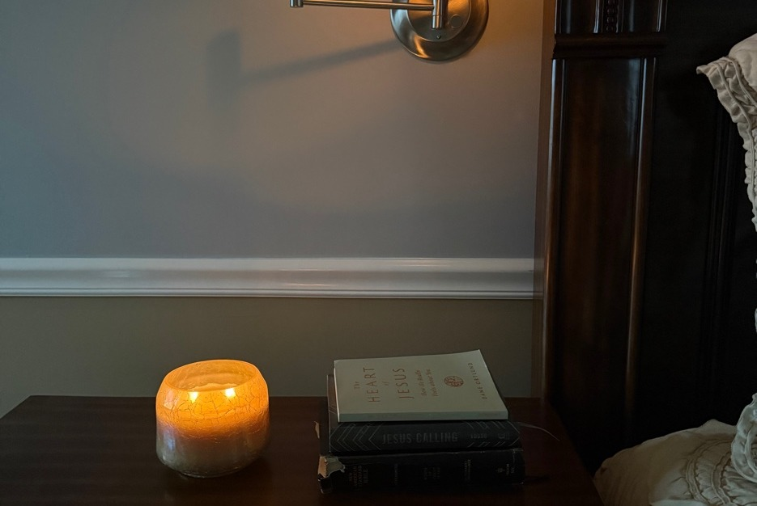

On Reading in Bed
"When you lie down, you will not be afraid; when you lie down, your sleep will be sweet."
— Proverbs 3:24
There are three books on my nightstand right now: the Bible, Jesus Calling, and a book called Gentle and Lowly — about the heart of Jesus, and how he really feels about us.
They've been there long enough to feel permanent, the way certain things in a house stop being objects and quietly become fixtures. I don't move them. I don't replace them. I simply reach for them.
This is the last ritual of the day.
Not a screen. Not a podcast. Not the restless pull of something that will follow me into sleep.
Just the lamp on the nightstand, the pillow adjusted, the covers pulled up, and the quiet that settles once the house has finally gone still.
I've tried reading other things at night. Novels, mostly. Sometimes nonfiction. There is a time for those — but not here, not at the end of the day.
What I want at night is not entertainment or information.
What I want is stillness.
Something that slows the mind rather than engages it.
Something that reminds me, after a full day of doing and deciding and moving, that I am held.
That is what these books do.
Jesus Calling is a daily devotional written as if Christ himself is speaking directly to you. Just a page, sometimes less. I've read entries that felt so precisely timed it was hard to believe they weren't written for that exact evening.
Gentle and Lowly is a slower read. Some nights I read only a paragraph before stopping, because something in it needs room to settle. It's a book about the character of Christ — not his power or his teaching, but his tenderness.
The way he meets people.
The way he meets me.
The Bible comes last, or sometimes first. Often a psalm. Something small enough to hold in my mind as sleep arrives.
I don't always make it through the page.
That's all right.
There is something I've come to love about falling asleep mid-sentence in a book like this — as if the words continue working quietly while the rest of me rests.
The lamp goes off.
The books remain on the nightstand.
Waiting for tomorrow night.